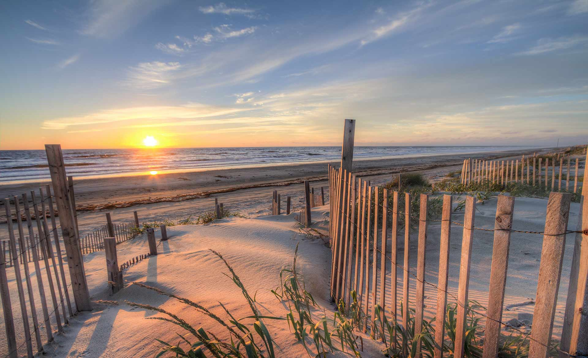

More info

- The Outer Banks, tenuous bands of sand that lie less than 40 miles inside the Gulf Stream and, in places, more than 20 miles from the North Carolina mainland, are a geological wonder. These barrier islands are accessible only by bridges, boats or planes. Their remoteness, fragility and continual exposure to sea and storms give these Outer Banks islands and inlets a constantly changing aspect. Born in swirling seas and abandoned by retreating mother earth, the Outer Banks’ dreamy genesis reminds one of Hilton’s paradisial Shangri-La.
- Historians say humans have been living in North Carolina for more than 10,000 years. Three thousand years ago, people traveled throughout the Outer Banks hunting, fishing and feeding off the forest. The Carolina Algonkian culture, a confederation of 75,000 people divided into distinct tribes, spread across 6,000 square miles of northeastem North Carolina.
- Historians say humans have been living in North Carolina for more than 10,000 years. Three thousand years ago, people traveled throughout the Outer Banks hunting, fishing and feeding off the forest. The Carolina Algonkian culture, a confederation of 75,000 people divided into distinct tribes, spread across 6,000 square miles of northeastem North Carolina.
- Geologists refer to the Outer Banks and similar land forms as “barrier islands” because they block the high-energy ocean waves and storm surges, protecting the coastal mainland. Barrier islands are common to many parts of the world, and many have similar features, yet no two are alike. Winds, weather and waves give each its own personality. Inlets from the sounds to sea are ever shifting, opening new channels to the ocean one century, closing off primary passageways the next. And folks who venture from one area of the Outer Banks to another soon will realize even along this small stretch of sand that there is a vast variety of topography, flora and temperatures.
- A century passed before English explorers again attempted to establish settlements along the Outer Banks. Throughout this time, however, European ships continued to explore the Atlantic seaboard, searching for gold and conquerable land. Scores of these sailing vessels wrecked in storms and on dangerous shoals east of the barrier islands. Spanish mustangs, some say, swam ashore from the sinking ships on which they were being transported overseas. Descendants of these wild stallions roam the beaches north of Corolla. Others are corralled in a National Park Service pen on Ocracoke Island.